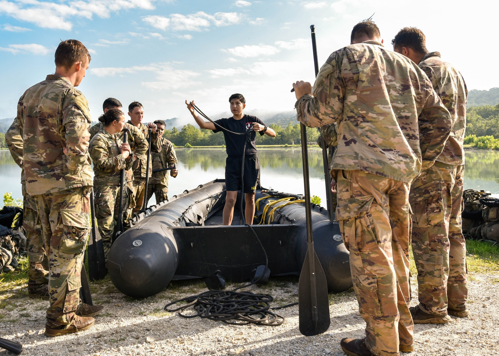
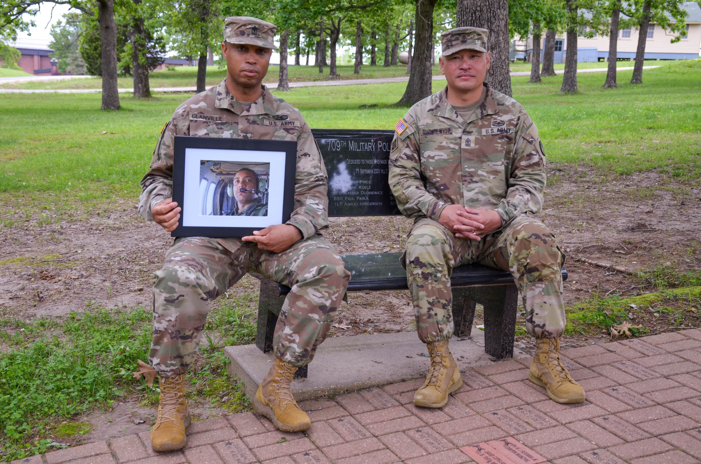
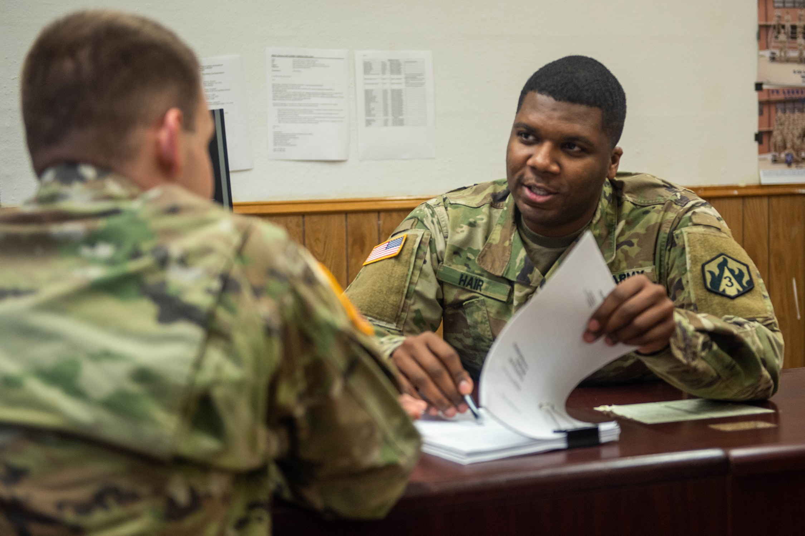
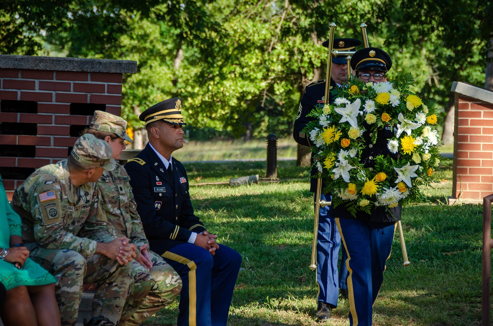
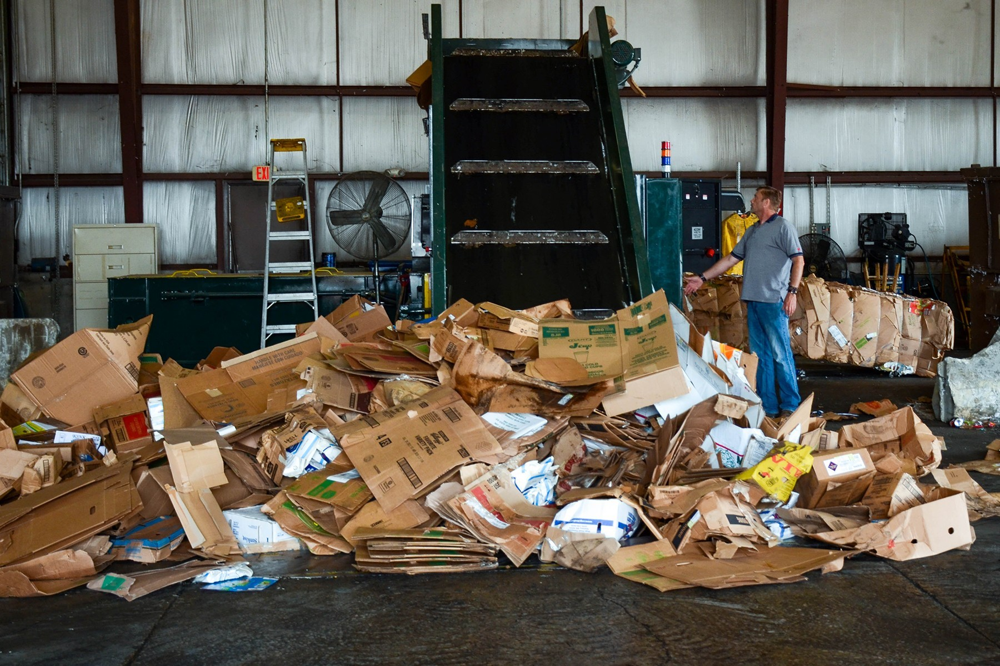
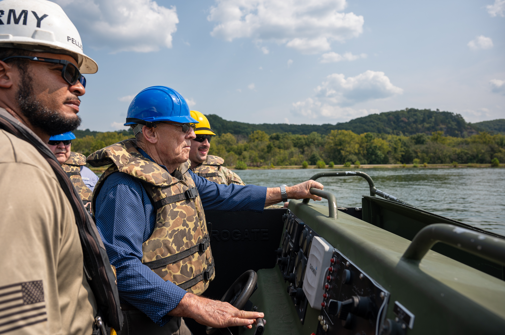
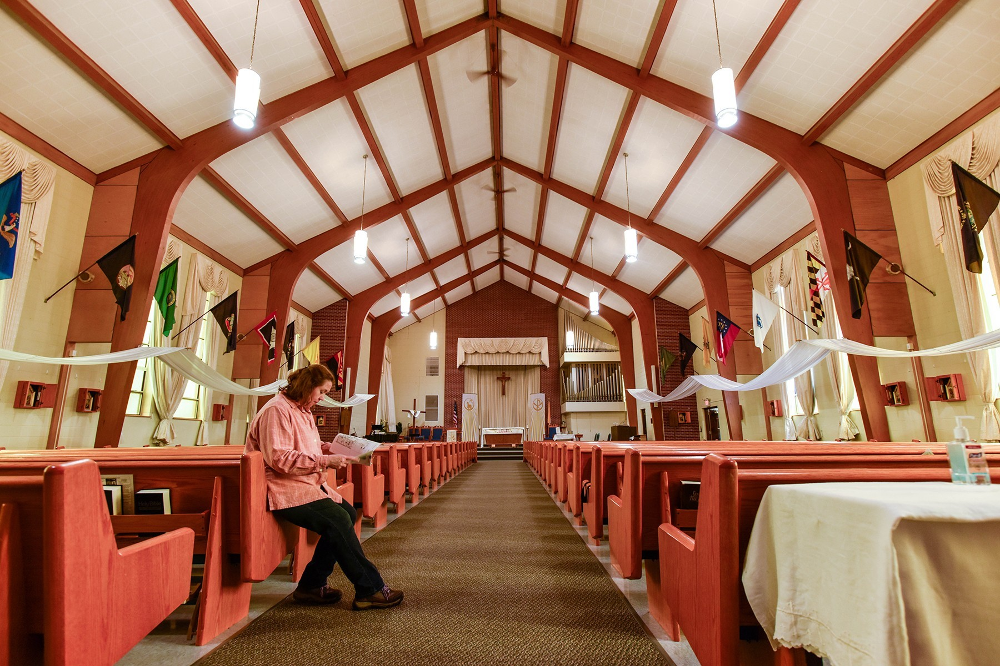
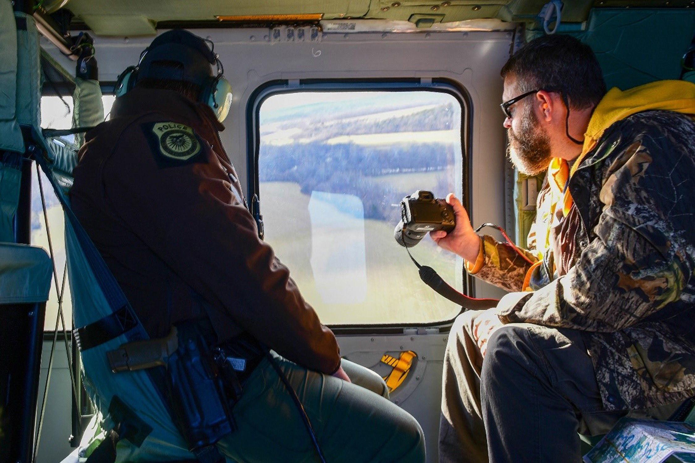

First Female Sapper Leader Course Instructor Paves the Way for Others
Leadership profile
A feature on Staff Sgt. Ariana Sanchez, the first female Sapper Leader Course instructor, and her path in a traditionally male-dominated field.
"Everyone has a story if you ask the right questions."
For me, journalism begins with curiosity and a willingness to listen. Behind every headline is a person, a perspective, or an experience worth understanding. Whether profiling an individual, exploring military history, or covering events that shape a community, I believe the most compelling stories come from looking beyond the obvious and asking questions that matter.
That philosophy has guided my work across more than 150 published news and feature articles for U.S. Army publications, including The Guidon and Army.mil.

Leadership profile
A feature on Staff Sgt. Ariana Sanchez, the first female Sapper Leader Course instructor, and her path in a traditionally male-dominated field.

Human-interest feature
A story of resilience, athletic achievement, and personal courage centered on a para-athlete and Army spouse.

Profile
A long-form feature tracing one chaplain’s journey from FBI special agent to Army ministry and exploring the varied paths that lead to military service.

Human-interest feature
An emotional account of two Army first sergeants brought together by the loss of their brothers in Iraq, exploring how shared grief, resilience, and personal tragedy shaped their approach to leadership.
Human-interest feature
A story of persistence following a Soldier who completed Basic Combat Training at age 50.
Leadership profile
A story examining the lasting influence of mentorship through the relationship between a seasoned noncommissioned officer and a former trainee who rose through the ranks to become an Army captain.

Military News
Coverage of 1st Lt. Davontae Hair's recognition as TRADOC's Adjutant General's Officer of the Year, highlighting his commitment to supporting Soldiers and the often-overlooked importance of military personnel operations.
Event reporting
Coverage of an interservice competition showcasing military transportation skills, teamwork, and professional excellence as Army operators claimed the top honor.

Organizational reporting
Coverage of a weeklong celebration honoring the Military Police Corps' history, traditions, achievements, and fallen Soldiers through ceremonies, competitions, and commemorative events.

Public-service reporting
An informative look at Fort Leonard Wood's recycling program, highlighting accessible collection services, environmental sustainability, and the benefits of waste reduction for the installation community.

Historical feature
An accessible examination of World War II deception operations connecting Army history with modern audiences.

Legacy feature
A story connecting former and current Soldiers through shared history, tradition, and service.

Historical feature
An exploration of archaeological discoveries, historic structures, and preservation efforts that protect thousands of years of history on the land now occupied by Fort Leonard Wood.

Community and environmental reporting
Coverage of an interagency partnership supporting wildlife conservation and public service.